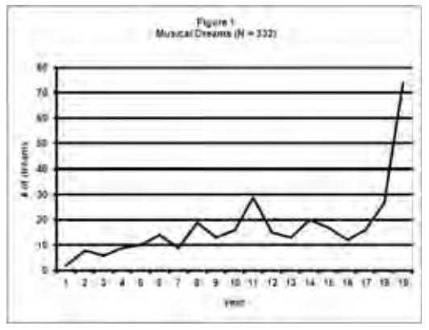
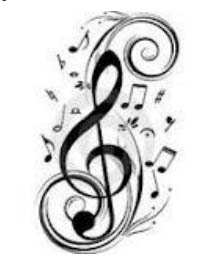
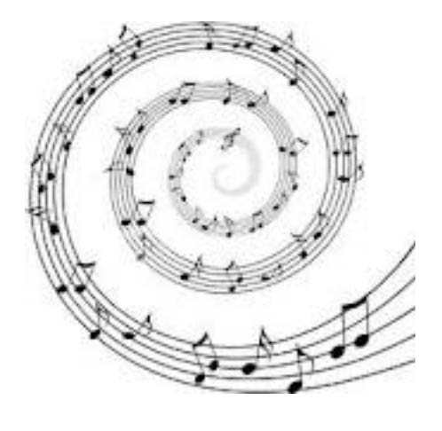
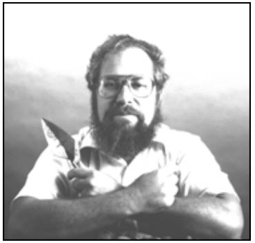

Dreams have long been a source of inspiration for musical composers of all genres. For example, Richard Wagner – who once wrote that “all poetry is only true dream interpretation” – recounted in his autobiography that he was unable to find a way to begin his gigantic Ring of the Niebelungen cycle when he had a dream in which he felt that he was drowning in overwhelming waves, while the figurations of an E flat major chord sounded in his mind. When he awoke, he realized that his dream had provided him with the opening of Das Rheingold, which is set at the bottom of the Rhine River.
When I proposed doing a symposium on music and dreaming to some colleagues at the 2010 IASD conference, what I had in mind to present was exploring how music finds its way into my dreams and how my unconscious mind is able to recognize musical themes and compositions. However, recent events in my dream life have transformed this study into an exploration of how music found its way out of my dreams and into a partially finished composition.
I have journaled my dreams for the past 19 years, using a database program that allows me to retrieve motifs with ease over the entire period. Out of a total of 9,696 recorded dreams, 332 contain the words “music” or “musical” – an average of 3.4% of the total. Over time, the number of musical dreams averaged 17.3 per year, and tended to increase to a peak in year 11 (2002-3), then to decrease to around the mean, and lastly to increase again sharply, starting in year 18 and continuing to the present (2009-11). (See Figure 1).

In addition to these two keywords, there have been numerous other occurrences of musical genres in my dreams. Music has always been a part of my life; I trained as a clarinetist from an early age and played in bands and orchestras through my second year in college. Over the past 9 years, as the result of a dream I reported in DNJV24#1, I have returned to instrumental practice on the crumhorn, a Renaissance double reed instrument ancestral to the oboe and the English horn. Mostly my interest is in classical music, but as Table 2 shows, both jazz and rock music appear in my dreams and are part of my waking appreciation, also. Missing from this list—and of less interest to me in waking life—are popular music, folk music, country, hip-hop, rap, and such genres. They do show up in my dreams, but more rarely. So, this listing somewhat parallels my musical tastes. However, as I do not consider myself to be a particularly good singer, it is a bit surprising that song shows up at the top of the list.
Table 2: Genres (in descending order of frequency)
Song – 100
Performance – 96
Tune – 86
Symphony – 46
Opera – 25
Voice – 23
Jazz – 20
Concerto – 17
Rock – 16
Classical – 10
Prelude – 10
Overture – 7
Duet – 7
March – 7
Hymn – 6
Sonata – 6
Composition – 6
Trio – 5
Also, there have been a number of more technical musical terms appearing with some frequency in my dreams. These are shown in Table 3, and obviously reflect upon my familiarity with the language of music and its incorporation into my dream life.
Table 3: Technical Terms (in descending order of frequency)
Theme – 63
Note – 62
Movement – 39
Bass – 36
Key – 24
Tenor – 22
Rhythm – 21
Staff – 19
Harmony – 16
Measure – 13
Alto – 13
Melody – 13
Beat – 12
Tone – 12
Pitch – 11
Lyrics – 10
Variation – 9
Soprano – 9
Scale – 8
Flat – 7
Octave – 5
Sharp – 4

In addition, actions of a musical nature appear in my dreams, especially playing and singing. These are shown in Table 4. (This listing does not include any non-musical instances of these verbs, such as playing games, or conducting tours.) Though I am not a profi cient vocalist, once again, singing is high on the list. Composing is rather far down on the list; while I composed a little music during high school, it is not something that I have felt motivated to do… until recently.
Table 4: Key Actions (in descending order of frequency)
Play – 298
Sing – 143
Perform – 49
Chant – 33
Conduct – 14
Practice –10
Hum - 10
Compose – 6
A wide variety of musical instruments have appeared in my dreams, as shown in Table 5. Not surprisingly, the crumhorn and the clarinet—the two instruments I actually play—have a high frequency; as a crumhornist, I play with a recorder group, which might account for the frequency of recorders on the list. But I do not play piano, or any stringed or brass instruments. So their frequent appearance in my dreams would seem to derive from listening rather than playing music.
Table 5: Instruments (in descending order of frequency)
Instrument – 87
Piano – 52
Crumhorn – 37
Recorder – 31
Clarinet – 29
Drum – 23
Violin – 19
Flute – 17
Trumpet – 13
Guitar – 12
Reed – 11
Saxophone – 10
Cello – 9
Organ – 7
Viola – 6
Bassoon – 6
Oboe – 6
Harpsichord – 6
Mouthpiece – 6
Trombone – 5
Pipe – 4
Sitar – 3
Tympani – 3
Bow – 3
The same pattern is demonstrated by the types of performers who appear in my dreams. As Table 6 shows, although wind players are near the top, singers exceed them in frequency; and other types of performers are not far behind. Much of the music I listen to is orchestral but increasingly, chamber music as well. I haven’t listened to much choral music, so it’s surprising that choristers appear so often. This may prefigure the developments I will discuss later in the article.
Table 6: Performers (in descending order of frequency)
Singers – 40
Conductors – 26
Wind Players – 26
Orchestra – 24
String Players – 19
Table 6
Keyboardists – 10
Music Teachers – 9
Rock Groups – 9
Brass Players – 8
Bands – 7
Jazz Musicians – 6
Percussionists – 6
A wide diversity of composers is represented in my dreams: 54 identifiable composers in all. Table 7 indicates all those appearing at least twice. Mahler and Wagner, who definitely rank among my favorites, are at the top of the list. However, the rest of the distribution is not entirely in accord with my waking life tastes. Some of my favorite composers — for example, Rachmaninoff and Vaughan-Williams — are very far down on the list; others, like Bruckner and Puccini, have only appeared once. With the exception of Michael Praetorius, none of the Renaissance and early Baroque composers whose music I now frequently play appear on this list. It might be suggested that the frequency of composers in my dreams is correlated with the degree to which their music impacts me emotionally … but the four Late Romantic composers I mentioned above, appeared only once or twice, and yet they wrote highly emotionally charged music.
Table 7: Composers (in descending order of frequency)
Gustav Mahler – 35
Richard Wagner – 25
Johannes Brahms – 16
Wolfgang Amadeus Mozart – 16
The Beatles – 16
Ludwig van Beethoven – 16
Johann Sebastian Bach – 12
Pyotr Ilyich Tchaikovsky – 9
Felix Mendelssohn – 5
Franz Schubert – 5
Antonin Dvorak – 4
Frederic Chopin – 4
Richard Strauss – 4
Giuseppi Verdi – 4
Jan Sibelius – 3
Franz Josef Haydn – 3
Michael Praetorius – 3
Robert Schumann - 3
Leonard Bernstein-3
Edvard Grieg – 2
Bob Dylan – 2
Percy Grainger - 2
Georg Frederick Handel – 2
Johann Pachelbel – 2
Sergei Rachmaninoff – 2
Camille Saint-Saens – 2
Dmitri Shostakovich - 2
Ralph Vaughan-Williams – 2
Carl Maria von Weber – 2
plus 29 others – 1 each
As I reported in DNJ V29#3, during the summer of 2010 I read Jung’s Red Book and it had a profound effect upon my consciousness. Themes from the book frequently appeared in my dreams and waking synchronous experience, and in dreams, often prior to my reading them. The “biggest” dream in this series concerned my observation of a group of choristers performing an a capella cantata based upon texts from the Red Book. Upon awakening, I realized that the texts derived from the “Incantations” section of the book, in which Jung presents a series of prayers within his dreaming that was directed to the Babylonian hero Gilgamesh, whom he had previously (in the dream) mortally wounded then saved, by collapsing him to miniscule size and placing him within an egg, which he brought to a village for incubation.
Subsequent dreaming has made it clear to me that I have been asked to compose this cantata out of themes my dreaming presents to me. Even though I had no formal education in musical composition, I agreed to undertake this project. The first stage was to translate the words of the Incantations from German into Akkadian, the actual language of the Gilgamesh epic. My training in ancient Near Eastern languages has made it possible for me to accomplish this. Next, I am applying to the Incantations section text the specific musical themes derived from my dreams.
My dreams indicated that the cantata would be sung a capella by four voices, and that it would be in 6 sections. In order to manifest this, I have audited two Music Theory courses this year, which enabled me to set the melodies my dreams gave me within a tonal harmonic structure. Far from easy!
The first section I was moved to set to music is associated with a powerful Red Book image (Jung 2009:55): the sun barque of the Egyptian god Ra sailing over the surface of the waters, beneath which lurks a monstrous fi sh, identified by Jung as the “Spirit of the Depths.” The text consists of four lines and the melody for it was given to me in a dream. Translated into English, these are:
One word, which has never yet been spoken;
One light, which has not yet shone;
One confusion, without equal;
And one road, without end.

Underlying the text, the Akkadian words for “Spirit of the Depths” are intoned as an undulating pedal, representing the waves. In addition, singers from time to time hold long notes on “a,” which is the Sumerian word for water.
The piece is in four sections, each of which corresponds to one of the four lines of the text. The first section picks up the theme of “one word” from the dream, as each line is sung solo above the bass pedal, first by the tenor, then by the alto, then by the soprano, then again by the tenor.
In the second section, the melody is taken up by the sopranos, harmonized by the altos, while the tenors sing the pedal and the basses harmonize beneath them. This corresponds to the “one light” phrase.
In the third, “confusion” section, the sopranos sing arpeggios while the altos hold the pedal and the tenors sing the melody, harmonized by the basses.
The fourth, “road” section, the sopranos sing descending road-like quarter notes while the altos harmonize, the tenors hold the pedal and the basses have the melody. There is a brief coda in which the pedal finally reaches the water’s surface with the soprano line and then works its way down through the voices.
This piece was premiered at the 2011 IASD conference to a receptive audience. A second section of the cantata was performed in August of 2011 at the same music camp that provided the inspiration for the original dream that “commissioned” the cantata.
Since I undertook the writing of the cantata, dreams about it have come in profusion. I have had 47 dreams in which the cantata was featured, 35 providing musical themes. In 11 of these, I have actually visualized the notes on the staff; more often, I just hear the themes. Most of these dreams are just brief snippets… or the theme occurs only at the end of a longer dream. Some dreams have provided me with insights into the structure of the cantata or helped me to revise what I have written. I know that there are themes that I have not been able to recall in the morning, but one dream early in the process informed me that these are being stored in my unconscious for when I will need them later on.
The creative process sometimes takes unexpected twists and turns; for example, the section performed last summer combines two dream themes in a canonical structure. I had no idea that the second theme would fi t the fi rst as well as it does. An early dream indicated that I would need to incorporate a chorale from Bach’s St. Matthew Passion into one section of the cantata. Recent dreams have shown me that this will actually be in a rondo form, with several repeats of the chorale interspersed with other dream themes. A section I am working on now contrasts a vigorous hora rhythm from one dream against a more melodic pastoral theme from another. As Jung observed of the paintings which accompany his dreams in the Red Book, sometimes they didn’t come out the way he expected!
In many instances, I have no idea with what portion of the cantata the themes will go. But in other cases, I get the words with the music. My knowledge of music enables me to see that some of the themes bear a relationship to existing music. But other themes are unfamiliar and hopefully my dreams will give me more! ℘
There is a language older by far and deeper than words. It is the language of bodies, of bodies on body, wind on snow, rain on trees, wave on stone. It is the language of dreams, gesture, symbol, memory and music. We have forgotten the language. We do not even remember that it exists.” - A Language Older than Words, Derrick Jensen

References
Hoffman, Curtiss 2005 A Call to Music! Dream Network Journal 24(4)/25(1):16-17. 2010
Read by the Red Book. Dream Network Journal 29(3):54-57.
Jung, Carl Gustav 2009 The Red Book. W.W. Norton, New York.
Wagner, Richard 1912 My Life. 2 vol. Dodd, Mead & Co., New York